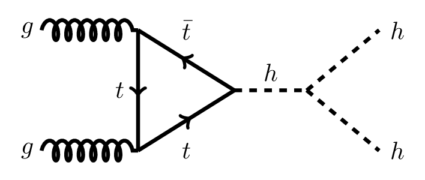

Yang Institute for Theoretical Physics, Stony Brook University

Research:
As a Ph.D. candidate at the Yang Institute for Theoretical Physics, I work with my advisor, Patrick Meade , on several different topics in theoretical particle physics. In general, I focus on phenomenological aspects of beyond the standard model (BSM) physics, including dark matter and electroweak baryogenesis, and their signatures at the LHC and other colliders.
While at Illinois, I worked with Professor Liang Yang on the EXO-200 experiment, searching for neutrino-less double-beta decay. I also briefly worked with Professor Karin Dahmen, who does research in avalanche statistics in a large class of materials using methods from condensed matter physics.
Current Projects:
Spontaneous Flavor Violation:
As we search for new physics at colliders and other experiments, it's important to be mindful of the different form any new interactions may take. In particular, if there exist new particles interacting with Standard Model quarks, one must specify how these interactions depend (or don't) on the different generations. In other words, one has to choose the flavor structure of the theory. Generally, this is done either by proposing a particular model of flavor or by assuming that the flavor structure of the new physics is in some sense "minimal", but this leaves us blind to a number of other interesting possibilities that may have important experimental consequences.
Recently, I've been working with Daniel Egana-Ugrinovic and Patrick Meade on understanding how to classify the different classes of flavor vacua. In doing so, we've engineered a new ansatz of Spontaneous Flavor Violation. This ansatz allows new particles to have sizable couplings to light quarks while still being safe from stringent constraints on flavor changing neutral current processes and thus leads to lots of new collider signatures, particularly in, e.g., models with a second Higgs doublet. More details and some preliminary results were presented at a GGI Workshop in August, and more updates will appear soon!
Di-Higgs Production at Colliders:
The recently discovered Higgs boson is the only fundamental scalar we know of, and thus has the unique ability to couple directly to itself. This self coupling, denoted $\lambda_3$ is fully determined in the standard model, but has yet to be measured independently. A precise measurement of $\lambda_3$ would be a crucial window into potential extensions of the standard model, and has direct implications for the viability of electroweak baryogenesis and Higgs inflation. Such a measurement appears to be impossible at the LHC, but several authors have indicated it could be done at a 100 TeV collider, such as the FCC-hh or SppC.

Our work aims to better understand how precisely we could measure $\lambda_3$ at a higher energy version of the LHC, which could reach energies around 30 TeV. Di-Higgs production, which involves production of an off-shell Higgs that subsequently decays to two Higgs bosons, is the only way of directly measuring the self-coupling. With a focus on the $hh \rightarrow b\bar{b}\gamma\gamma$ decay channel, we hope to improve the estimated precision on $\lambda_3$ at these energies and explore the testability of several BSM scenarios. For more details, check out the slides I prepared for my oral examination here.
Publications:
First Search for Lorentz and CPT Violation in Double B Decay with EXO-200 (As part of the EXO-200 Collaboration)
Undergrad Thesis: Search for Nucleon Decays into Invisible Channels in Xe-136
Contact Information:
Department of Physics
Stony Brook University
Stony Brook, NY 11794
samuel.homiller@stonybrook.edu
External Links:
Stony Brook Dept. of Physics
Yang Institute for Theoretical Physics
The Simons Center for Geometry & Physics